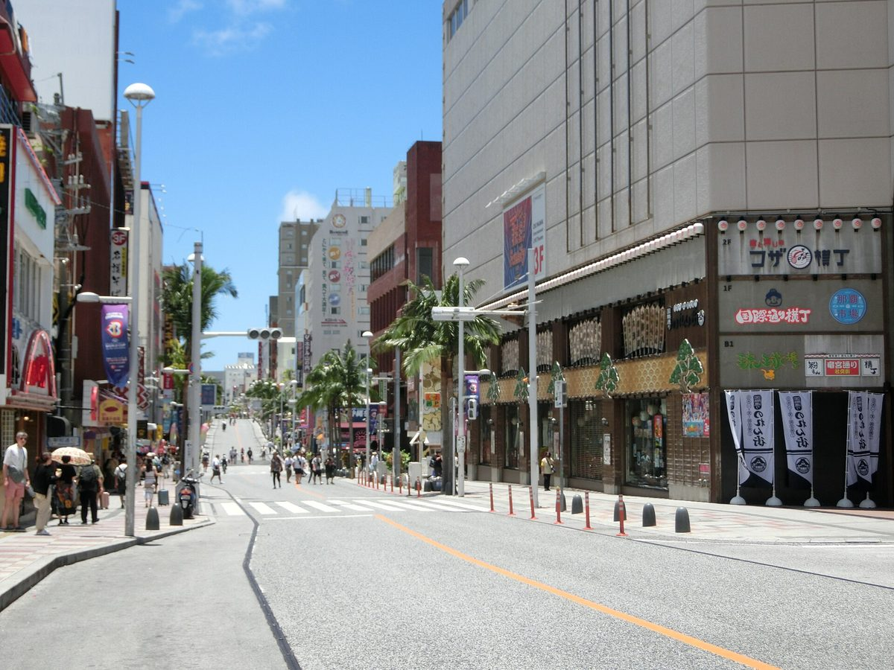

沖繩的玄關就在這裡——機場、單軌、國際通，多數人的第一天和最後一天都在這一帶。往南一點的南部，有海景咖啡、世界遺產的聖地，還有適合慢慢開的海岸線。
部分連結為合作連結，不影響你的價格。詳見 免責聲明與合作揭露。
正殿還在重建，現場反而能看到「正在復原」的難得樣子。園區、石牆與展示都還在，值得留一點時間。
這裡是在地信仰的祈禱之地，不是純觀光景點。請輕聲、不要觸碰或攀爬岩石，把它當作別人的廟一樣尊重。
市區靠單軌很方便，但南部的海景、聖地、暢貨中心都在單軌之外。想往南走，租車或包車會省下很多時間。
航班、租車、住哪一區、行程怎麼排——之後可以直接敲我們（SNS 籌備中）。先看看我們想做的事。